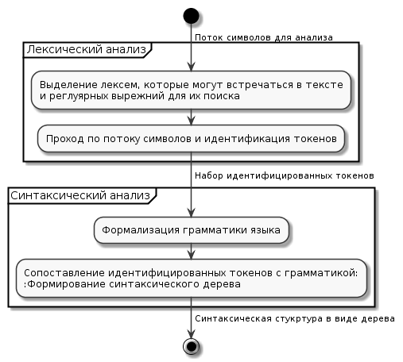
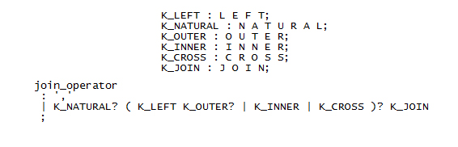

Авторы: Варяник А.С., Грищенко В.И.
Источник: Программная инженерия: методы и технологии разработки информационновычислительных систем (ПИИВС-2018) / Сборник материалов II Международной научно-практической конференции (студенческая секция) – Донецк, ДонНТУ – 2018 г. – 19-22 c.
Введение
В статье [1] были рассмотрены критерии качества структуры реляционной базы данных. Описанные критерии могут быть подвержены оценке путем проведения процедуры статического анализа исходного SQL-кода, определяющего анализируемую базу.
Статический анализ кода играет важную роль в современном мире разработки прикладного программного обеспечения. Правильное и своевременное встраивание этапа статического анализа в процесс написания кода может значительно сэкономить как временные, так и финансовые ресурсы. Учитывая, насколько широко, на данный момент, используются СУБД с поддержкой SQL, инструмент, позволяющий комплексно оценить качество и связность написанного SQL-кода, может быть крайне востребован.
Стоит отметить, что сам процесс анализа кода является завершающим этапом цепочки последовательных операций. В его основе лежат процедуры лексического и синтаксического разбора, реализация которых напрямую зависит от специфики текста, в данном случае программного кода.
В данной статье будет сформулировано понятие статического анализа в целом и в контексте «structured query language», а также предметно описан процесс лексического и синтаксического разбора, включая средства его реализации.
Статический анализ программного кода
Статический анализ кода – это процесс, заключающийся в выявлении логических и стилистических ошибок в исходном коде. Статический анализ в какой-то степени является аналогом процесса обзора кода (code review), но в автоматизированном виде. Обычно на практике используются оба подхода, так как каждый имеет ряд своих достоинств [7].
Статический анализ выполняется на этапе кодирования, что позволяет исправлять некачественный код еще до его попадания в реальную среду выполнения или даже в общее хранилище (репозиторий). Данный процесс позволяет выявлять как критические ошибки в программном коде, приводящие к исключительным ситуациям при выполнении программы, так и минорные нарушения программистом стилистических спецификаций и рекомендаций. Если нарушения кодом логики языка от программы к программе будут соответствовать общим правилам, заложенным в его инфраструктуре, то правила, касающиеся стиля кодирования, могут зависеть от конкретной компании или команды разработчиков. Поэтому, зачастую, системы, выполняющие статический анализ, позволяют гибко конфигурировать и задавать собственные правила, исходя из которых, будет проверяться программный код.
Важно отметить, что пропорционально росту программной системы растет и количество ошибок, которые могут быть допущены при написании исходного кода, поэтому в сфере разработки баз данных, где нередко можно встретить крупные программные комплексы, статический анализ особенно актуален.
Касаемо SQL-кода статический анализ в целом работает так же, как и для других языков программирования. Существует общий стандарт языка, который имеет собственную лексическую и синтаксическую формализацию. Каждая СУБД, в свою очередь, дополняет или переопределяет стандартную спецификацию, образуя собственные диалекты: PostgreSQL. Oracle. MySQL и т.д. Данный факт значительно усложняет задачу разработки универсального инструмента для автоматизированного статического анализа, так как при анализе необходимо учитывать особенности конкретного диалекта.
Конкретизируя предмет статического анализа SQL-кода, стоит обратиться к критериям и метрикам качества, описанным в [1]. Например, описанный критерий ссылочной целостности сложно определить не имея контекста и предметной области: средства статического анализа не позволяют определить логические связи между сущностями базы данных. Используя лексический и синтаксический разбор можно разложить любые инструкции языка на составляющие и определить, следует ли программист стилистическим нормам описания связи и в таком случае установил ли он ее на самом деле. Либо наоборот, отталкиваясь от формального наличия внешнего ключа проверить, соблюдены ли правила его именования.
Подобным образом можно проанализировать любое формализованное правило. Отталкивая от спецификации SQL и сформированных обществом разработчиков рекомендаций можно сформировать необходимый перечень этих правил, для эффективной работы автоматизированной системы статического анализа. Подробное описание данного перечня будет рассмотрено в последующих работах.
Основные понятия и идея лексического и синтаксического разбора
Лексический анализ или разбор представляет собой процесс анализа и распознавания определенных элементов или их групп (лексем) во входном наборе или последовательности символов, для их последующей идентификации и выделении токенов (токенизация). В общем случае в процессе лексического анализа входными данными является поток символов, а выходными – набор классифицированных токенов (классификация может иметь различные уровни сложности) [5].
Программная система, выполняющая лексический анализ, называется лексическим анализатором или лексером. Любая подобная система работает в два этапа. Первый этап заключается в определении лексем, которые могут встречаться во входном потоке и их сопоставлении с регулярными выражениями, с помощью которых эти лексемы можно найти. На втором этапе происходит непосредственно выявление в потоке символов значений определенных ранее лексем в виде идентифицированных токенов. Полученный в результате набор токенов в последствие может быть передан на вход синтаксическому анализатору или парсеру, чья задача будет состоять в проведении синтаксического анализа.
Синтаксическим анализом называется процесс обработки набора токенов (в общем случае лексем) определенного формального языка с его грамматикой. Данный процесс выполняется синтаксическим анализатором (парсером), который принимает на вход результаты работы предшествующего лексического анализа. Выходными данными синтаксического анализа является синтаксическое дерево или дерево разбора, представляющее из себя всю синтаксическую структуру анализируемой последовательности символов [6].
Связка из лексического и синтаксического анализатора (рис.1) используется во многих областях программирования и не только, но ручное их написание является достаточно трудоемким процессом, поэтому во многих программных продуктах, компиляторах, интерпретаторах и т.д. используются генераторы анализаторов.

Рисунок 1 - Схема работы связки лексера и парсера
Генераторы лексических и синтаксических анализаторов принимают на вход лексическую и синтаксическую структуру языка в некотором формальном представлении, на выходе же мы получаем исходный код лексера и парсера на одном из языков программирования (язык зависит от выбранного генератора).
Инструменты реализации задачи генерации лексического и синтаксического анализатора для SQL
Задача генерации лексических и синтаксических анализаторов не нова и на данный момент существует большое количество программных продуктов, позволяющих ее решить.
Стоит отметить популярную связку из программ Flex и Bison, которые являются аналогами и поддерживают обратную совместимость с продуктами Lex и Yacc, но используются в системах на базе пакетов GNU [8].
Здесь Flex (Lex) – является генератором лексических анализаторов и позволяет генерировать лексеры в виде функции на языке С, в свою очередь Bison (Yacc) является генератором синтаксических анализаторов и генерирует исходный код не только на языке С, но и на популярных языках С++ и Java.
Данное сочетание широко используется во множестве программных систем в свою очередь из-за того, что оба программных продукта являются открытыми и имеют качественную документацию.
Но при исследовании предметной области и анализе существующих средств реализации для более глубокого ознакомления и изучения был выбран иной программный продукт – ANTLR.
ANTLR (Another Tool for Language Recognition) – представляет собой открытое программное обеспечение, предназначенное для генерации нисходящих анализаторов для формальных языков.
Основным преимуществом ANTLR перед другим программным обеспечением является то, что данный продукт объединяет в себе функции генерации лексического и синтаксического анализаторов, позволяя при этом использовать единую нотацию. Также генератор предоставляет возможность получать информацию об ошибках в процессе анализа и возможность восстановления после ошибок.
ANTLR нашел применение во многих крупных проектах: использовался для реализации Python и Groovy, а так же в различных IDE для анализа различных языков программирования [2].
Говоря подробнее об использовании ANTLR, стоит отметить удобство и простоту его нотации. В одном файле описываются правила разбиения текста на токены (лексемы) для лексера и правила обработки этих токенов для парсера.
В контексте языка SQL описание лексического анализатора будет представлять собой описание ключевых слов и всевозможных литералов, допускающихся к использованию, а описанием синтаксического анализатора будет перечень правил, по которым могут формироваться SQL-инструкции из набора описанных ранее токенов. На рисунке 2 показан простой пример описания правила для оператора «JOIN» и токенов, которые могут быть его составляющими.

Рисунок 2 - Пример описания лексера и парсера для SQL в ANTLR
На платформе «github» существуют проекты с описанием лексического и синтаксического анализаторов SQL для генератора ANTLR. Так в [3] реализована работа с SQLLite, а в [4], являющемся его ответвлением, присутствует реализация классической спецификации SQL и отдельная реализация диалекта Oralce. Оба проекта далеко не идеальны и требуют значительных доработок в формализации анализаторов и их расширению для различных SQL диалектов, но они являются хорошей базой, от которой можно отталкиваться в собственной реализации.
Подводя итог под темой лексического и синтаксического анализа, стоит сказать, что только после проведения необходимого разбора исходного кода и получения синтаксического дерева можно приступать непосредственно к процессу статического анализа. От методов и алгоритмов обработки этого дерева будет зависеть скорость и эффективность процесса анализа SQL-кода и структуры анализируемой базы данных. На данном этапе ANTLR также имеет значительные преимущества перед своими конкурентами, так как предоставляет широкие возможности для работы с выходным синтаксическим деревом.
Выводы
В данной статье был проведен анализ понятия статического анализа SQL-кода. Определен подход к этому процессу в использовании его для оценки качества структуры базы данных. Также были выделены этапы обработки исходного кода, предшествующие статическому анализу, исследованы существующие средства их реализации и готовые решения с их применением. В дальнейшем планируется закончить процесс реализации этапа подготовки SQL и приступить к детализации процесса обработки подготовленных структур и данных.
Литература
1. Варяник А.С. Грищенко В.И / Выявление критериев и компонентов качества структур реляционных данных для системы автоматизированного анализа / Донецк, ДонНТУ, 2018г. – 68-71с.
2. ANTLR (ANother Tool for Language Recognition) / Электронный ресурс – Режим доступа: http://www.antlr.org/
3. Github: bkiers/sqlite-parser / Электронный ресурс – Режим доступа: https://github.com/bkiers/sqlite-parser
4. Github: lchaboud-restlet/antlr-sqlparser / Электронный ресурс – Режим доступа: https://github.com/lchaboud-restlet/antlr-sqlparser
5. Хантер Р. / Основные концепции компиляторов / «Вильямс» М., 2002г. – 256с.
6. А. Ахо, Дж. Ульман./ 3. Теория синтаксического анализа, перевода и компиляции / 1978г. – 614с.
7. Синтаксический анализ кода / Электронный ресурс – Режим доступа: https://habr.com/company/pvs-studio/blog/254855/
8. Р. Левин / Flex & Bison / О’Рейли, 2009г. – 294с.